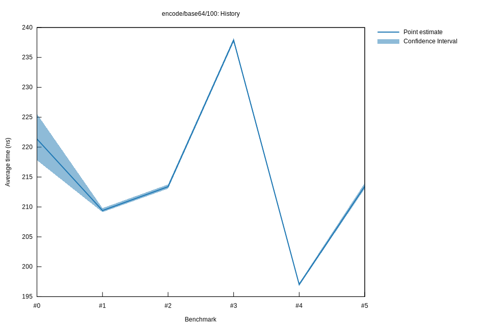

# 52022-10-16T20:03:14+03:00
|
Lower Bound |
Estimate |
Upper Bound |
| Value: |
213.06ns |
213.46ns |
213.99ns |
| Throughput: |
456.55MiB/s |
455.72MiB/s |
454.57MiB/s |
| Change in Value: |
+8.1385% |
+8.4314% |
+8.7773% |
| Change in Throughput: |
-7.5260% |
-7.7758% |
-8.0691% |
No change in performance detected.
# 42022-10-16T17:23:05+03:00
|
Lower Bound |
Estimate |
Upper Bound |
| Value: |
196.83ns |
197.02ns |
197.28ns |
| Throughput: |
494.20MiB/s |
493.72MiB/s |
493.08MiB/s |
| Change in Value: |
-17.318% |
-17.125% |
-16.925% |
| Change in Throughput: |
+20.945% |
+20.664% |
+20.373% |
No change in performance detected.
# 32022-10-15T17:14:36+03:00
|
Lower Bound |
Estimate |
Upper Bound |
| Value: |
237.56ns |
237.88ns |
238.20ns |
| Throughput: |
409.47MiB/s |
408.92MiB/s |
408.37MiB/s |
| Change in Value: |
+10.462% |
+11.178% |
+11.674% |
| Change in Throughput: |
-9.4708% |
-10.054% |
-10.454% |
No change in performance detected.
# 22022-10-15T16:49:36+03:00
|
Lower Bound |
Estimate |
Upper Bound |
| Value: |
213.06ns |
213.39ns |
213.76ns |
| Throughput: |
456.56MiB/s |
455.85MiB/s |
455.06MiB/s |
| Change in Value: |
+1.6915% |
+2.1422% |
+2.8027% |
| Change in Throughput: |
-1.6634% |
-2.0973% |
-2.7263% |
No change in performance detected.
# 12022-10-08T17:26:21+03:00
|
Lower Bound |
Estimate |
Upper Bound |
| Value: |
209.13ns |
209.40ns |
209.80ns |
| Throughput: |
465.14MiB/s |
464.54MiB/s |
463.66MiB/s |
| Change in Value: |
-8.1693% |
-6.4900% |
-4.9329% |
| Change in Throughput: |
+8.8961% |
+6.9404% |
+5.1889% |
No change in performance detected.
# 02022-10-08T17:07:19+03:00
|
Lower Bound |
Estimate |
Upper Bound |
| Value: |
217.82ns |
221.36ns |
225.55ns |
| Throughput: |
446.59MiB/s |
439.45MiB/s |
431.28MiB/s |